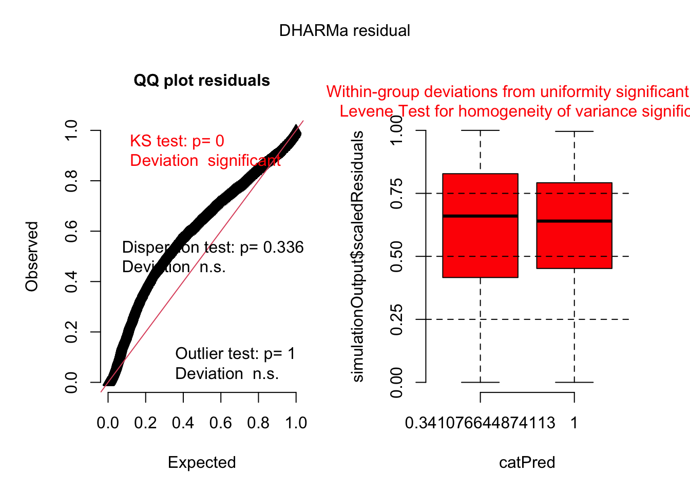

In our ongoing exploration of Blue-footed Booby chick development, we previously investigated whether a chick’s scaled mass index (SMI) at fledgling was influenced by its hatching order (Model 2). Building upon that foundation, we now delve into the critical role of additional covariates, a common practice in ecological fieldwork where numerous factors are hypothesized to affect our response variable. While exhaustive inclusion of all potential covariates is often constrained by data availability, strategic model selection allows us to pinpoint those that provide significant explanatory power.
One particularly relevant covariate in this study is the chick’s hatching date. In this specific booby population, earlier hatching dates are frequently associated with enhanced chick survival. Conversely, later hatching can coincide with periods of increased food scarcity as ocean temperatures rise and fish prey disperse. Given these environmental pressures, we hypothesize that under the stressful conditions of late-season hatching, the disparity in fledgling mass between chicks might be more pronounced compared to those hatched earlier in the season. This suggests a potential interactive effect between hatching date and hatching order.
In the subsequent sections, we will systematically investigate this hypothesis by:
Incorporating hatching date as a fixed effect into the location (mean) component of our model.
Adding an interaction term between hatching date and hatching order to the location part of the model.
Conducting model comparisons to assess whether accounting for hatching date, both as a main effect and in interaction with hatching order, significantly improves our model’s fit and provides novel insights into chick fledgling success.
Our response variable, Scaled Mass Index (SMI), is a continuous variable. Therefore, a Gaussian distribution will be employed for our statistical modeling. The raw data, illustrating the SMI of chicks at fledgling, categorized by their hatching order (1st or 2nd hatched), is visualized below.
dat<-read_csv(here("data","SMI_Drummond_et_al_2025.csv"))%>%subset(REDUCTION==0)dat<-dat%>%dplyr::select(-TIME, -HATCHING_DATE,-REDUCTION,-RING)%>%mutate(SMI =as.numeric(SMI), # Scaled mass index lnSMI=log(SMI), NEST =as.factor(NEST), WORKYEAR =as.factor(WORKYEAR), RANK =factor(RANK, levels =c("1", "2")))ggplot(dat, aes(x =RANK, y =lnSMI, fill =RANK, color =RANK))+geom_violin(aes(fill =RANK), color ="#8B8B83", width =0.8, alpha =0.3, position =position_dodge(width =0.7))+geom_jitter(aes(color =RANK), size =3, alpha =0.4, shape =1, position =position_jitterdodge(dodge.width =0.5, jitter.width =0.15))+stat_summary(fun =mean, geom ="crossbar", width =0.1, color ="black", linewidth =0.5, position =position_dodge(width =0.7))+labs( title ="Body Condition (SMI) by Hatching Order", x ="Hatching Order", y ="ln(Scaled Mass Index)")+scale_fill_manual( values =c("1"="#1F78B4", "2"="#E31A1C")# )+scale_color_manual( values =c("1"="#1F78B4", "2"="#E31A1C")# )+scale_x_discrete( labels =c("1"="First-Hatched", "2"="Second-Hatched"), expand =expansion(add =0.5))+scale_y_continuous(breaks =seq(6.5,8,0.2),limits =c(6.5,8))+theme_classic(base_size =16)+theme( axis.text =element_text(color ="#6E7B8B", size =14), axis.title =element_text(color ="#6E7B8B", size =14), legend.position ="none", axis.text.x =element_text(angle =0, hjust =0.5))
8.0.0.2 Begin with a simpler model and check residual diagnostics
Having established our initial modeling framework, we now move to a critical phase: assessing the model’s assumptions through residual analysis. We will begin with a foundational model that includes only hatching order as a fixed effect. To facilitate this, we’ll leverage the DHARMa package, which simulates scaled residuals and provides automated diagnostic plots. This step is indispensable for verifying key model assumptions, particularly the normality and homoscedasticity of the residuals, ensuring the reliability of our inferences.
model2_1<-glmmTMB(lnSMI~1+RANK+(1|NEST)+(1|WORKYEAR), family =gaussian(),data=dat)simulationOutput<-simulateResiduals(fittedModel =model2_1, plot =F)plot(simulationOutput)

Our initial residual diagnostics, specifically the QQ plot and Kolmogorov-Smirnov (KS) test, clearly indicate that the model’s residuals are not uniformly distributed. This non-uniformity signals potential issues with our chosen statistical distribution or the fundamental structure of the current model.
Furthermore, despite no significant concerns regarding overdispersion or outliers, a closer look at the boxplots and the Levene test revealed a lack of consistency within residual groups and non-homogeneous variances. These collective findings strongly suggest that our current model is not fully capturing the inherent complexity and variability within the data.
To effectively address this non-uniformity and varying dispersion, we will now proceed with fitting a location-scale model. For simplicity and to focus on the effects of our new covariate, we will specifically structure this model to include RANK as a fixed effect only in the scale (variance) component. The new covariate, and its interaction with RANK, will be added solely to the location (mean) part of the model. This approach allows us to investigate the impact of the new covariate on the average SMI while simultaneously accounting for the varying dispersion observed across RANK levels.
8.0.0.3 Gradually increase model complexity
Our next step involves enhancing the model by incorporating additional covariates. We begin by preparing our new covariate, ST_DATE, which represents the standardized hatching date (with November 3rd designated as day 1).
Crucially, we will center ST_DATE before including it in the model. Centering involves subtracting the mean of the variable from each observation, resulting in a new variable with a mean of zero.
This practice is particularly beneficial because it:
Facilitates Interpretation of Main Effects: When interaction terms are present in a model, the uncentered main effects can be difficult to interpret, as they represent the effect of that variable when all other interacting variables are at zero (which might be outside the observed range of the data). Centering ensures that the main effect of a predictor is interpreted at the average value of the other interacting predictors, making its meaning more intuitive and relevant within the context of our data.
Reduces Multicollinearity: While less critical for simple interactions, centering can sometimes help reduce multicollinearity between main effects and their interaction terms, which can improve model stability and estimation.
By centering ST_DATE, we set the stage for a more robust and interpretable analysis as we gradually build out our model.
model2_2<-glmmTMB(lnSMI~1+RANK+(1|NEST)+(1|WORKYEAR), dispformula =~1+RANK, data =dat, family =gaussian)
First, we build a location-scale model with ST_DATE (centered) as a fixed effect in the location (mean) part of the model.
model2_3a<-glmmTMB(lnSMI~1+RANK+ST_DATE+(1|NEST)+(1|WORKYEAR), dispformula =~1+RANK, data =dat, family =gaussian)
Following the previous model, we now increase complexity further by including a two-way interaction.
model2_3b<-glmmTMB(lnSMI~1+RANK+ST_DATE+RANK*ST_DATE+(1|NEST)+(1|WORKYEAR), dispformula =~1+RANK, data =dat, family =gaussian)
8.0.0.4 Compare models using information criteria
To evaluate whether our model’s fit is significantly improved by the inclusion of additional covariates and interaction terms, we will now employ information criteria, specifically the Akaike Information Criterion corrected for small sample sizes (AICc). AICc provides a balance between model fit and model complexity, penalizing models with more parameters to help identify the most parsimonious yet well-fitting model.
Our first comparison will be between the model that includes hatching date as a fixed effect in the location part and the simpler model that omits this covariate. This will allow us to assess the individual contribution of ST_DATE to explaining the variation in lnSMI.
model.sel(model2_2, model2_3a)
Our first comparison shows a clear improvement: the model including hatching date (model2_3a) has a lower AICc value (AICc = -8215.4) compared to the model without it (model2_2, AICc = -8070.8). This confirms that hatching date significantly improves model fit.
Next, we will compare model2_3a (hatching date as a fixed effect) with the model that includes an interaction between hatching date and hatching order in the location part.
model.sel(model2_3a, model2_3b)
Comparing the models, we find that the model incorporating the interaction between hatching date and hatching order (model2_3b) has a lower AICc value (AICc = -8257.7) compared to the model without it (model2_3a, AICc = -8215.4). This improvement in AICc indicates that the interaction model provides a superior fit, effectively capturing how the influence of hatching date on fledgling mass varies between first- and second-hatched chicks.
By systematically comparing models and gradually increasing their complexity, we can gain deeper insights into the underlying data generating process. In this analysis, we expanded our model by incorporating ST_DATE as a covariate and, importantly, its interaction with RANK.
The results from this more complex model show that both ST_DATE and the RANK:ST_DATE interaction term are statistically significant predictors of lnSMI. This suggests that the relationship between SMI and hatching order changes as the season progresses. We can quantify this by interpreting the model’s coefficients as percentage changes in SMI. The coefficient for ST_DATE indicates that for each additional day into the season, the SMI of a first-hatched chick is predicted to decrease by approximately 0.085%. The significant interaction term reveals that this seasonal decline is almost twice as steep for second-hatched chicks, whose SMI is predicted to decrease by a combined 0.16% per day.
While these effects are statistically significant, the small magnitude of these daily percentage changes implies that their practical impact might be relatively modest. Therefore, depending on the specific goals of the analysis and the desired level of model parsimony, a simpler model without these terms might perform nearly as well in terms of predictive power, while being easier to interpret.
Note
Precise Percentage Change Calculation To calculate the exact percentage change from a coefficient (β), you must use the exponential function with the formula: 100 * (exp(β) - 1).
For a first-hatched chick (RANK 1): The calculation using the ST_DATE coefficient is: 100 * (exp(-0.00085) - 1) = -0.085% change in SMI per day.
For a second-hatched chick (RANK 2): First, combine the main and interaction coefficients to get the total slope: Total Slope = -0.00085 + (-0.00073) = -0.00158 Then, apply the formula to this combined slope: 100 * (exp(-0.00158) - 1) = -0.158% change in SMI per day.
8.1 Figures
Code
st_date_seq<-seq(min(dat$ST_DATE), max(dat$ST_DATE), length.out =50)emm_location<-emmeans(model2_3b, ~ST_DATE*RANK, component ="cond", type ="response", at=list(ST_DATE =st_date_seq,RANK=unique(dat$RANK)))df_location<-as.data.frame(emm_location)%>%rename( mean_log =emmean, lwr =lower.CL, upr =upper.CL)emm_dispersion<-emmeans(model2_3b, ~RANK, component ="disp", type ="response")df_dispersion<-as.data.frame(emm_dispersion)%>%rename( log_sigma =response, lwr =lower.CL, upr =upper.CL)pos<-position_dodge(width =0.4)plot_location_emmeans<-ggplot(df_location, aes(x =ST_DATE, y =mean_log,color=factor(RANK),group=factor(RANK)))+geom_ribbon(aes(ymin =lwr, ymax =upr, fill =factor(RANK)), alpha =0.2, linetype =0)+geom_line(linewidth =1)+labs( title ="Location", x ="Hatching date (days)", y ="ln(SMI)", color="Hatching order", fill="Hatching order")+theme_classic()+scale_y_continuous(breaks =seq(6.5,8,0.2),limits =c(6.5,8))+scale_x_continuous(breaks=seq(0,160,30),limits =c(0, 160))+theme(legend.position ='bottom')plot_dispersion_emmeans<-ggplot(df_dispersion, aes(x =RANK, y =log_sigma,color=factor(RANK)))+geom_point(position =pos, size =3)+geom_errorbar(aes(ymin =lwr, ymax =upr), position =pos, width =0.15)+labs( title ="Scale", x ="Hatching order", y ="Standard Deviation", color="Hatching order")+theme_classic()+scale_y_continuous(breaks =seq(0.07,0.12,0.01),limits =c(0.07, 0.12))+theme(legend.position ="none")plot_location_emmeans+plot_dispersion_emmeans
Source Code
---title: "Model Selection (Example 1)"---```{r}#| label: load_packages#| echo: false# Load required packagespacman::p_load(## data manipulation dplyr, tibble, tidyverse, broom, broom.mixed,## model fitting ape, arm, brms, broom.mixed, cmdstanr, emmeans, glmmTMB, MASS, phytools, rstan, TreeTools,## model checking and evaluation DHARMa, loo, MuMIn, parallel,## visualisation bayesplot, ggplot2, patchwork, tidybayes,## reporting and utilities gt, here, kableExtra, knitr)```In our ongoing exploration of Blue-footed Booby chick development, we previously investigated whether a chick's scaled mass index (SMI) at fledgling was influenced by its hatching order (Model 2). Building upon that foundation, we now delve into the critical role of additional covariates, a common practice in ecological fieldwork where numerous factors are hypothesized to affect our response variable. While exhaustive inclusion of all potential covariates is often constrained by data availability, strategic model selection allows us to pinpoint those that provide significant explanatory power.One particularly relevant covariate in this study is the chick's hatching date. In this specific booby population, earlier hatching dates are frequently associated with enhanced chick survival. Conversely, later hatching can coincide with periods of increased food scarcity as ocean temperatures rise and fish prey disperse. Given these environmental pressures, we hypothesize that under the stressful conditions of late-season hatching, the disparity in fledgling mass between chicks might be more pronounced compared to those hatched earlier in the season. This suggests a potential interactive effect between hatching date and hatching order.In the subsequent sections, we will systematically investigate this hypothesis by:Incorporating hatching date as a fixed effect into the location (mean) component of our model.Adding an interaction term between hatching date and hatching order to the location part of the model.Conducting model comparisons to assess whether accounting for hatching date, both as a main effect and in interaction with hatching order, significantly improves our model's fit and provides novel insights into chick fledgling success.::: panel-tabset### Step 1#### Identify data type and plot raw dataOur response variable, Scaled Mass Index (SMI), is a continuous variable. Therefore, a Gaussian distribution will be employed for our statistical modeling. The raw data, illustrating the SMI of chicks at fledgling, categorized by their hatching order (1st or 2nd hatched), is visualized below.```{r}#| label: show_data -model2 -eg1#| fig-width: 8#| fig-height: 6dat <-read_csv(here("data","SMI_Drummond_et_al_2025.csv")) %>%subset(REDUCTION ==0)dat<- dat%>% dplyr::select(-TIME, -HATCHING_DATE,-REDUCTION,-RING) %>%mutate(SMI =as.numeric(SMI), # Scaled mass indexlnSMI=log(SMI),NEST =as.factor(NEST), WORKYEAR =as.factor(WORKYEAR),RANK =factor(RANK, levels =c("1", "2")))ggplot(dat, aes(x = RANK, y = lnSMI, fill = RANK, color = RANK)) +geom_violin(aes(fill = RANK),color ="#8B8B83",width =0.8, alpha =0.3,position =position_dodge(width =0.7)) +geom_jitter(aes(color = RANK),size =3,alpha =0.4,shape =1,position =position_jitterdodge(dodge.width =0.5, jitter.width =0.15)) +stat_summary(fun = mean, geom ="crossbar", width =0.1, color ="black", linewidth =0.5, position =position_dodge(width =0.7))+labs(title ="Body Condition (SMI) by Hatching Order",x ="Hatching Order",y ="ln(Scaled Mass Index)" ) +scale_fill_manual(values =c("1"="#1F78B4", "2"="#E31A1C") # ) +scale_color_manual(values =c("1"="#1F78B4", "2"="#E31A1C") # ) +scale_x_discrete(labels =c("1"="First-Hatched", "2"="Second-Hatched"),expand =expansion(add =0.5) ) +scale_y_continuous(breaks =seq(6.5,8,0.2),limits =c(6.5,8)) +theme_classic(base_size =16) +theme(axis.text =element_text(color ="#6E7B8B", size =14),axis.title =element_text(color ="#6E7B8B", size =14),legend.position ="none",axis.text.x =element_text(angle =0, hjust =0.5) )```### Steps 2 and 3#### Begin with a simpler model and check residual diagnosticsHaving established our initial modeling framework, we now move to a critical phase: assessing the model's assumptions through residual analysis. We will begin with a foundational model that includes only hatching order as a fixed effect. To facilitate this, we'll leverage the `DHARMa` package, which simulates scaled residuals and provides automated diagnostic plots. This step is indispensable for verifying key model assumptions, particularly the normality and homoscedasticity of the residuals, ensuring the reliability of our inferences.```{r}#| label: model_fitting2-model1-eg1model2_1<-glmmTMB(lnSMI ~1+ RANK + (1|NEST)+(1|WORKYEAR),family =gaussian(),data=dat)simulationOutput <-simulateResiduals(fittedModel = model2_1, plot = F)plot(simulationOutput)```Our initial residual diagnostics, specifically the QQ plot and Kolmogorov-Smirnov (KS) test, clearly indicate that the model's residuals are not uniformly distributed. This non-uniformity signals potential issues with our chosen statistical distribution or the fundamental structure of the current model.Furthermore, despite no significant concerns regarding overdispersion or outliers, a closer look at the boxplots and the Levene test revealed a lack of consistency within residual groups and non-homogeneous variances. These collective findings strongly suggest that our current model is not fully capturing the inherent complexity and variability within the data.To effectively address this non-uniformity and varying dispersion, we will now proceed with fitting a location-scale model. For simplicity and to focus on the effects of our new covariate, we will specifically structure this model to include `RANK` as a fixed effect only in the scale (variance) component. The new covariate, and its interaction with `RANK`, will be added solely to the location (mean) part of the model. This approach allows us to investigate the impact of the new covariate on the average SMI while simultaneously accounting for the varying dispersion observed across `RANK` levels.### Step 4#### Gradually increase model complexityOur next step involves enhancing the model by incorporating additional covariates. We begin by preparing our new covariate, `ST_DATE`, which represents the standardized hatching date (with November 3rd designated as day 1).Crucially, we will center ST_DATE before including it in the model. Centering involves subtracting the mean of the variable from each observation, resulting in a new variable with a mean of zero. This practice is particularly beneficial because it:Facilitates Interpretation of Main Effects: When interaction terms are present in a model, the uncentered main effects can be difficult to interpret, as they represent the effect of that variable when all other interacting variables are at zero (which might be outside the observed range of the data). Centering ensures that the main effect of a predictor is interpreted at the average value of the other interacting predictors, making its meaning more intuitive and relevant within the context of our data.Reduces Multicollinearity: While less critical for simple interactions, centering can sometimes help reduce multicollinearity between main effects and their interaction terms, which can improve model stability and estimation.By centering ST_DATE, we set the stage for a more robust and interpretable analysis as we gradually build out our model.```{r}#| label: call new covariable - eg1dat<- dat%>% dplyr::mutate(ST_DATE=scale(ST_DATE,center=T,scale = F))``````{r}#| label: model_fitting2 - model2 - glmmtmb - eg1model2_2 <-glmmTMB( lnSMI ~1+ RANK + (1|NEST)+(1|WORKYEAR),dispformula =~1+ RANK, data = dat, family = gaussian )```First, we build a location-scale model with `ST_DATE` (centered) as a fixed effect in the location (mean) part of the model.```{r}#| label: model_fitting2 add new covariable - eg1model2_3a <-glmmTMB( lnSMI ~1+ RANK + ST_DATE + (1|NEST)+(1|WORKYEAR),dispformula =~1+ RANK, data = dat, family = gaussian )```Following the previous model, we now increase complexity further by including a two-way interaction.```{r}#| label: model_fitting2 interaction - eg1model2_3b<-glmmTMB( lnSMI ~1+ RANK + ST_DATE + RANK*ST_DATE +(1|NEST)+(1|WORKYEAR),dispformula =~1+ RANK, data = dat, family = gaussian )```### Step 5#### Compare models using information criteriaTo evaluate whether our model's fit is significantly improved by the inclusion of additional covariates and interaction terms, we will now employ information criteria, specifically the Akaike Information Criterion corrected for small sample sizes (AICc). AICc provides a balance between model fit and model complexity, penalizing models with more parameters to help identify the most parsimonious yet well-fitting model.Our first comparison will be between the model that includes hatching date as a fixed effect in the location part and the simpler model that omits this covariate. This will allow us to assess the individual contribution of `ST_DATE` to explaining the variation in `lnSMI`.```{r}#| label: model_comparison no interactions - eg1model.sel(model2_2, model2_3a)```Our first comparison shows a clear improvement: the model including hatching date (model2_3a) has a lower AICc value (AICc = -8215.4) compared to the model without it (model2_2, AICc = -8070.8). This confirms that hatching date significantly improves model fit.Next, we will compare model2_3a (hatching date as a fixed effect) with the model that includes an interaction between hatching date and hatching order in the location part.```{r}#| label: model_comparison interaction - eg1model.sel(model2_3a, model2_3b)```Comparing the models, we find that the model incorporating the interaction between hatching date and hatching order (model2_3b) has a lower AICc value (AICc = -8257.7) compared to the model without it (model2_3a, AICc = -8215.4). This improvement in AICc indicates that the interaction model provides a superior fit, effectively capturing how the influence of hatching date on fledgling mass varies between first- and second-hatched chicks.```{r}#| echo: falsesummary(model2_3b)```By systematically comparing models and gradually increasing their complexity, we can gain deeper insights into the underlying data generating process. In this analysis, we expanded our model by incorporating `ST_DATE` as a covariate and, importantly, its interaction with `RANK`.The results from this more complex model show that both `ST_DATE` and the `RANK:ST_DATE` interaction term are statistically significant predictors of `lnSMI`. This suggests that the relationship between `SMI` and hatching order changes as the season progresses. We can quantify this by interpreting the model's coefficients as percentage changes in `SMI`. The coefficient for ST_DATE indicates that for each additional day into the season, the `SMI` of a first-hatched chick is predicted to decrease by approximately 0.085%. The significant interaction term reveals that this seasonal decline is almost twice as steep for second-hatched chicks, whose `SMI` is predicted to decrease by a combined 0.16% per day.While these effects are statistically significant, the small magnitude of these daily percentage changes implies that their practical impact might be relatively modest. Therefore, depending on the specific goals of the analysis and the desired level of model parsimony, a simpler model without these terms might perform nearly as well in terms of predictive power, while being easier to interpret.::: {.callout-note}Precise Percentage Change CalculationTo calculate the exact percentage change from a coefficient (β), you must use the exponential function with the formula: `100 * (exp(β) - 1)`.For a first-hatched chick (RANK 1):The calculation using the ST_DATE coefficient is:`100 * (exp(-0.00085) - 1) =` -0.085% change in SMI per day.For a second-hatched chick (RANK 2):First, combine the main and interaction coefficients to get the total slope:`Total Slope = -0.00085 + (-0.00073) =` -0.00158Then, apply the formula to this combined slope:`100 * (exp(-0.00158) - 1) =` -0.158% change in SMI per day.:::## Figures```{r}#| label: emmeans_plots - model2_3b - glmmtmb#| code-fold: truest_date_seq <-seq(min(dat$ST_DATE), max(dat$ST_DATE), length.out =50)emm_location <-emmeans(model2_3b, ~ST_DATE*RANK,component ="cond", type ="response",at=list(ST_DATE = st_date_seq,RANK=unique(dat$RANK)))df_location <-as.data.frame(emm_location) %>%rename(mean_log = emmean, lwr = lower.CL, upr = upper.CL )emm_dispersion <-emmeans(model2_3b, ~ RANK,component ="disp", type ="response")df_dispersion <-as.data.frame(emm_dispersion) %>%rename(log_sigma = response, lwr = lower.CL, upr = upper.CL )pos <-position_dodge(width =0.4)plot_location_emmeans <-ggplot(df_location, aes(x = ST_DATE, y = mean_log,color=factor(RANK),group=factor(RANK))) +geom_ribbon(aes(ymin = lwr, ymax = upr, fill =factor(RANK)), alpha =0.2, linetype =0) +geom_line(linewidth =1)+labs(title ="Location",x ="Hatching date (days)",y ="ln(SMI)",color="Hatching order",fill="Hatching order" ) +theme_classic()+scale_y_continuous(breaks =seq(6.5,8,0.2),limits =c(6.5,8))+scale_x_continuous(breaks=seq(0,160,30),limits =c(0, 160)) +theme(legend.position ='bottom')plot_dispersion_emmeans <-ggplot(df_dispersion, aes(x = RANK, y = log_sigma,color=factor(RANK))) +geom_point(position = pos, size =3) +geom_errorbar(aes(ymin = lwr, ymax = upr), position = pos, width =0.15) +labs(title ="Scale",x ="Hatching order",y ="Standard Deviation",color="Hatching order" ) +theme_classic() +scale_y_continuous(breaks =seq(0.07,0.12,0.01),limits =c(0.07, 0.12))+theme(legend.position ="none")plot_location_emmeans + plot_dispersion_emmeans```:::